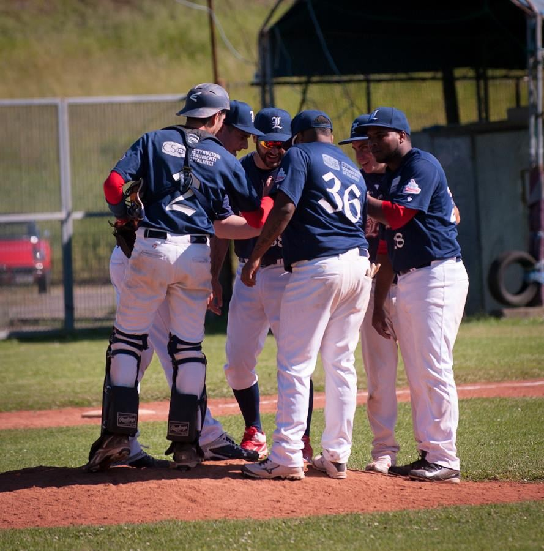

Quel che non sapevamo è che la pioggia l’avrebbe fatta da padrona…
Non è nostra abitudine nascondersi dietro a giustificazioni o scuse, i numeri nel baseball parlano chiaro, abbiamo vinto solamente 2 delle 9 partite disputate finora ed il girone di ritorno ha già raggiunto la terza giornata.
Nove partite su quattordici incontri disponibili, praticamente un terzo del nostro campionato attualmente se li è “giocati” di fatto il maltempo.
Su un totale di 32 formazioni che partecipano al Campionato di Serie B siamo l’unica squadra ad aver giocato sotto le dieci gare; le altre compagini hanno disputato una media di 14 incontri, qualcuna addirittura 16.
Lo staff tecnico lastrigiano ogni settimana si trova quindi ad affrontare il problema del ritmo partita dei propri giocatori; soltanto in un’occasione i Lancers hanno giocato due giornate consecutive, le altre partite si sono svolte a distanza di 2 o 3 settimane l’una dall’altra.
Analizzando le 7 partite perse si nota che 2 sono terminate oltre i nove inning regolamentare, precisamente con Livorno e Cali Roma, oltre ad aver ottenuto una vittoria ci siamo giocati alla pari anche l’altra gara sfiorando la storica doppietta.
Gara 1 contro la Fiorentina (finita 6-1, qui il riepilogo) è stata una gran bella partita, sicuramente potevamo fare di più in fase offensiva ma certamente per essere l’esordio assoluto abbiamo retto il confronto contro una squadra costruita quasi per intero da giocatori provenienti da categorie importanti.
Stessa sorte contro l’Olmedo (finita 7-11 ma con un gran recupero sul finale), magari una partita giocata meglio nel box di battuta ma con qualche errore difensivo e incertezza sul monte in più.
Le altre tre gare sono finite prima del limite per manifesta superiorità, due volte contro la Fiorentina e una contro l’Olmedo.
Due di queste possiamo definirle partite da dimenticare, giocate con una bassa intensità che ha portato i Lancers a giocare un brutto baseball, nell’altra ha semplicemente prevalso la forza offensiva del team fiorentino.
I Lancieri non hanno ancora affrontato Latina e Nettuno, attualmente le due squadre laziali si trovano nella zona bassa della classifica insieme al team lastrigiano, pertanto una scontro diretto si preannuncia molto interessante.
Ed interessante lo sarà quindi il prossimo impegno, tempo permettendo, i Lancers infatti affrontano la trasferta di Nettuno con forte motivazione e determinati a far bene per trovare morale e la fiducia che arriva soltanto giocando con continuità.
FORZA LANCERS!!!